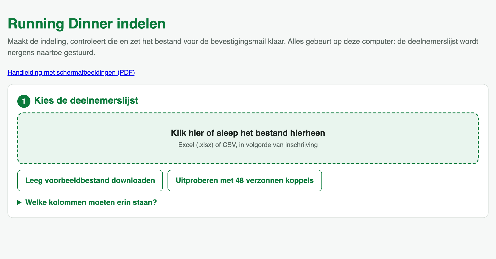
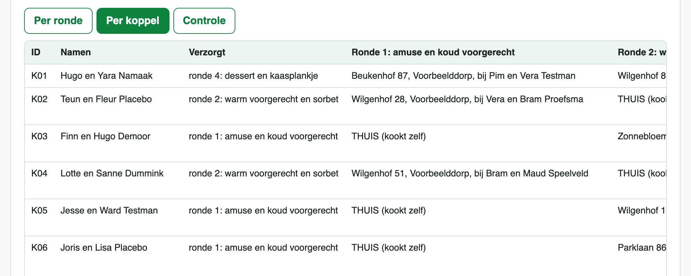
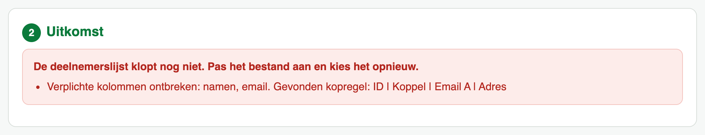

Bovenaan staat in een groene balk of de indeling gelukt is en of alle controles geslaagd zijn. Zijn er reservekoppels, dan staan die in het gele vlak eronder.

Handleiding bij de indeeltool
Met de indeeltool maak je in een paar minuten de indeling voor het Running Dinner. Je kiest de deelnemerslijst, de tool verdeelt de koppels over de rondes en de tafels, controleert de uitkomst en zet de bestanden klaar voor de bevestigingsmail. De schermafbeeldingen in deze handleiding zijn gemaakt met verzonnen koppels.
Wat de tool regelt
De tool staat online op https://ralfknevel-collab.github.io/running-dinner/ en werkt in elke browser. De deelnemerslijst blijft op je eigen computer: de pagina verwerkt het bestand in de browser en stuurt niets door.
De tool leest een Excel-bestand met één koppel per regel. Gebruik voor 2027 het bestand Running Dinner 2027 (invullen).xlsx. Daarin staan de koppels van 2026 al, met de ronde die ze toen kookten.
ronde_vorig_jaar leeg.| id | namen | adres | tweede_mailadres | allergieen | ronde_vorig_jaar | beperkingen | gekookt_dit_jaar | |
|---|---|---|---|---|---|---|---|---|
| 1 | Anna en Bram Voorbeeld | Molenweg 3 | anna@example.nl | bram@example.nl | notenallergie | 2 | ||
| 2 | Carlijn en Daan Fictief | Parklaan 12 | carlijn@example.nl | 4 | niet ronde 3 | |||
| 3 | Eva en Finn Verzonnen | Dorpsstraat 8 | eva@example.nl | eet geen vlees |
| Kolom | Wat erin staat |
|---|---|
id | Volgnummer van het koppel. Elk nummer komt één keer voor. Verplicht. |
namen | De namen zoals ze in de mail moeten staan. Verplicht. |
adres | Het adres waar het koppel kookt. Verplicht. |
email | Eén e-mailadres per koppel, voor de bevestigingsmail. Elk adres mag maar één keer voorkomen. Verplicht. |
tweede_mailadres | Adres van de partner, om te bewaren. De tool gebruikt deze kolom niet. |
allergieen | Allergieën en dieetwensen van het koppel samen. Leeg als er niets is. |
ronde_vorig_jaar | De ronde die het koppel bij de vorige editie kookte: 1 is koud voorgerecht, 2 warm voorgerecht, 3 hoofdgerecht en 4 dessert. Leeg bij nieuwe deelnemers. |
beperkingen | Een ronde die het koppel niet kan koken, geschreven als niet ronde 3. Meerdere scheid je met een puntkomma. |
gekookt_dit_jaar | Vul je na afloop in. De tool gebruikt deze kolom niet. |
Let op
ronde_vorig_jaar.Open de tool in je browser. Klik op het groene vlak en kies het Excel-bestand, of sleep het bestand erheen. De indeling wordt direct gemaakt.

Bovenaan staat in een groene balk of de indeling gelukt is en of alle controles geslaagd zijn. Zijn er reservekoppels, dan staan die in het gele vlak eronder.
De uitkomst heeft drie tabbladen. Per ronde toont alle tafels. Per koppel toont voor elk koppel de route van de avond: welke ronde het zelf kookt en bij wie het de andere rondes aanschuift. Controle toont de uitslag van elke voorwaarde.


Bevalt de indeling niet, bijvoorbeeld omdat buren bij elkaar aan tafel zitten, klik dan op Andere indeling maken. De tool maakt een nieuwe indeling die aan dezelfde voorwaarden voldoet. Dat kun je zo vaak herhalen als je wilt. Sla een indeling die je wilt houden wel eerst op, want met elke klik vervangt de nieuwe indeling de vorige.

| Knop | Wat je krijgt |
|---|---|
| Indeling (Excel) | De volledige indeling per ronde en per koppel, met de controle en de reservekoppels. |
| Laposta-importbestand | Eén regel per koppel met e-mailadres, namen, ronde, gerecht en de allergieën en dieetwensen van de eigen gasten. De gasten staan er zonder naam in. |
| Controlerapport | De uitslag van alle controles als tekstbestand. |
| Rondes voor volgend jaar | Per koppel de ronde die het kookt, zonder allergieën. |
namen, ronde, gerecht en allergieen_gasten.{{namen}}, {{ronde}}, {{gerecht}} en {{allergieen_gasten}}.Dezelfde stappen staan ook in de tool zelf, onder "Zo verstuur je de bevestigingsmail met Laposta".
Klopt er iets niet aan het bestand, dan maakt de tool geen indeling en zie je in een rood vlak wat er mis is. Pas het bestand aan in Excel, sla het op en kies het opnieuw.

| Melding | Oplossing |
|---|---|
| Verplichte kolommen ontbreken | De kopregel is aangepast of het verkeerde tabblad staat vooraan. Zet de kolomnamen terug zoals in het invulbestand. |
| Adres of e-mailadres ontbreekt | Vul de lege cel in op de genoemde regel. |
| E-mailadres komt meerdere keren voor | Geef elk koppel een eigen adres in de kolom email. Laposta bewaart per adres maar één regel. |
| Ronde vorig jaar is geen ronde 1 t/m 4 | Vul een cijfer van 1 tot en met 4 in, of laat de cel leeg. |
| Te weinig koppels | Onder de 16 koppels is de indeling niet te maken. |
Vul in de deelnemerslijst de kolom gekookt_dit_jaar in met de ronde die elk koppel kookte. Die staat in het bestand "Rondes voor volgend jaar" en op het tabblad Per koppel van de indeling. Bij de volgende editie kopieer je de lijst en zet je die waarden in de kolom ronde_vorig_jaar. Zo weet de tool wie wat gekookt heeft.
Bewaar verder zo weinig mogelijk. De indeling, het Laposta-bestand en de lijst in Laposta bevatten allergieën en dieetwensen. Verwijder die na het diner.
Running Dinner indeeltool. Handleiding, november 2026.